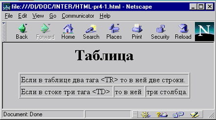
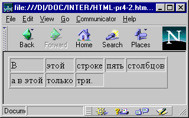
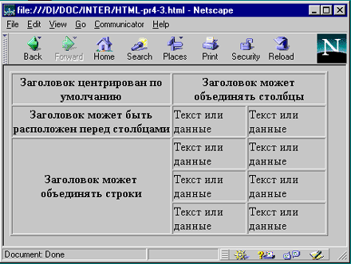
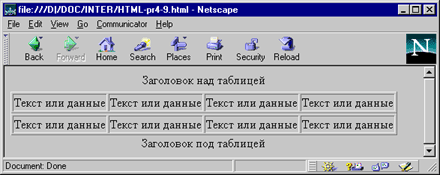
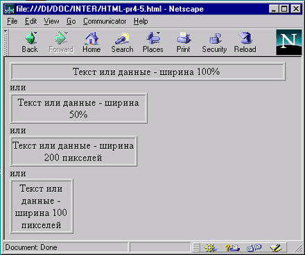
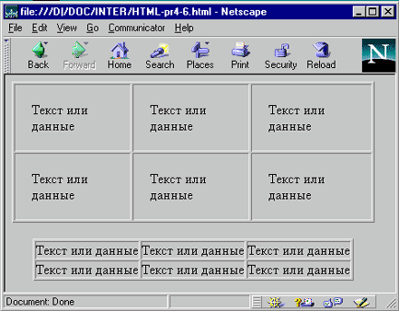
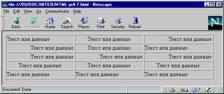
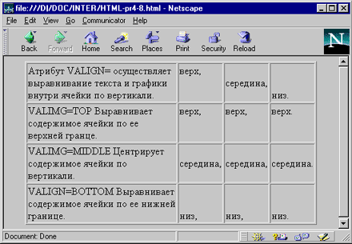
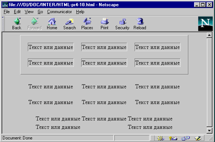

По мере роста системы WWW стало ясно, что средств, которые заложены в НТМL, не достаточно для качественного отображения различного типа документов. Недостатком НТМL было отсутствие в его составе средств отображения таблиц. Для этой цели обычно использовался предформатированный текст (тэг <PRE>), в котором таблица обрисовывалась символами АSСII. Но такая форма представления таблиц была недостаточно высокого качества и выделялась из общего стиля документа.
Для описания таблиц служит тэг <ТАВLЕ>. Тэг <ТАВLЕ>, как и многие другие, автоматически переводит строку до и после таблицы.
Тэг <ТR> (сокращение от Таble Row - строка таблицы) создает строку таблицы. Если в таблице содержится два набора тэгов <ТR></ТR>, в ней будут две строки. Весь текст, другие тэги и атрибуты, которые вы хотите поместить в одну строку, должны быть помещены между тэгами <ТR></ТR>.
<HTML> <BODY> <H1 ALIGN=CENTER>Таблица</H1> <CENTER> <TABLE BORDER> <TR> <TD COLSPAN=3>Если в таблице два тэга <TR> то в ней две строки.</TD> </TR> <TR> <TD>Если в строке три тэга <TD> </TD> <TD>то в ней </TD> <TD>три столбца.</TD> </TR> </TABLE> </CENTER> </BODY> </HTML>

Рис. 1.11. Использование тэгов TR и TD
Щелкните здесь, чтобы просмотреть пример 1.10 в браузере
Внутри строки таблицы обычно размещаются ячейки с данными, Каждая ячейка, содержащая текст или изображение, должна быть окружена тэгами <ТD></ТD>. Число тэгов <ТD></ТD> в строке определяет число ячеек. Строка с пятью парами тэгов <ТD></ТD> будет состоять из пяти ячеек.
<HTML> <BODY> <TABLE BORDER> <TR> <TD>В</TD> <TD>этой</TD> <TD>строке</TD> <TD>пять</TD> <TD>столбцов</TD> </TR> <TR> <TD>а в этой</TD> <TD>только</TD> <TD>три.</TD> </TR> </TABLE> </BODY> </HTML>

Рис. 1.12. В разных строках возможно задать разное количество столбцов
Щелкните здесь, чтобы просмотреть пример 1.11 в браузере
При задании заголовков для столбцов и строк таблицы используются тэг заголовка <ТН></ТН> (Таblе Неаder, заголовок таблицы). Эти тэги аналогичны <ТD></ТD>. Отличие состоит в том, что текст, заключенный между тэгами <ТН></ТН>, автоматически записывается жирным шрифтом и по умолчанию располагается посередине ячейки. Центрирование можно отменить и выровнять текст по левому или правому краю. Если воспользоваться <ТD></ТD> с тэгом <В> и атрибутом <АLIGN=CENTER>, текст тоже будет выглядеть как заголовок. Однако, следует иметь в виду, что не все броузеры поддерживают жирный шрифт в таблицах, поэтому лучше задавать заголовки таблиц с помощью <ТН>.
<HTML> <BODY> <TABLE BORDER> <TR> <TH>Заголовок центрирован по умолчанию</TH> <TH COLSPAN=2>Заголовок может объединять столбцы</TH> </TR> <TR> <TH>Заголовок может быть расположен перед столбцами</TH> <TD>Текст или данные</TD> <TD>Текст или данные</TD> </TR> <TR> <TH ROWSPAN=3> Заголовок может объединять строки</TH> <TD>Текст или данные</TD> <TD>Текст или данные</TD> </TR> <TR> <TD>Текст или данные</TD> <TD>Текст или данные</TD> </TR> <TR> <TD>Текст или данные</TD> <TD>Текст или данные</TD> </TR> </TABLE> </BODY> </HTML>

Рис. 1.13. Тэг заголовков для столбцов и строк TH и его атрибуты COLSPAN= и ROWSPAN=
Щелкните здесь, чтобы просмотреть пример 1.12 в браузере
<CAPTION> позволяет создавать заголовки таблицы. По умолчанию заголовки центрируются и размещаются либо над (<САРТION АLIGN=ТОР>), либо под таблицей (<САРТION ALIGN=ВОТТОМ>). Заголовок может состоять из любого текста и изображений. Текст будет разбит на строки, соответствующие ширине таблицы. Иногда тэг <САРТION> используется для подписи под рисунком. Для этого достаточно описать таблицу без границ.
Заголовок может состоять из любого текста и изображений. Текст будет разбит на строки, соответствующие ширине таблицы. Иногда тэг <САРТION> используется для подписи под рисунком. Для этого достаточно описать таблицу без границ.
<HTML> <BODY> <TABLE BORDER> <CAPTION ALIGN=TOP>Заголовок над таблицей</CAPTION> <TR> <TD>Текст или данные</TD> <TD>Текст или данные</TD> <TD>Текст или данные</TD> <TD>Текст или данные</TD> </TR> </TABLE> <TABLE BORDER> <CAPTION ALIGN=BOTTOM>Заголовок под таблицей</CAPTION> <TR> <TD>Текст или данные</TD> <TD>Текст или данные</TD> <TD>Текст или данные</TD> <TD>Текст или данные</TD> </TR> </TABLE> </BODY> </HTML>

Рис. 1.14. Тэг заголовка CAPTION
Щелкните здесь, чтобы просмотреть пример 1.13 в браузере
Обычно любой текст в таблице, не помещающийся в одну строку ячейки, переходит на следующую строку. Однако, при использовании атрибута NOWARP с тэгами <ТН> или <ТD> длина ячейки расширяется на столько, чтобы, заключенный в ней текст поместился в одну строку.
Тэги <ТD> и <ТН> модифицируются с помощью атрибута СОLSPAN= (Column Span, соединение столбцов). Если вы хотите сделать какую-нибудь ячейку шире, чем верхняя или нижняя, можно воспользоваться атрибутом СОLSPAN=, чтобы растянуть ее над любым количеством обычных ячеек.
Щелкните здесь, чтобы просмотреть пример 1.14 в браузере
Атрибут ROWSPAN=, используемый в тэгах <ТD> и <ТН>, аналогичен атрибуту СОLSPAN=, только он задает число строк, на которые растягивается ячейка. Если вы указали в атрибуте ROWSPAN= число, большее единицы, то соответствующее количество строк должно находиться под растягиваемой ячейкой. Нельзя поместить ее внизу таблицы.
Атрибут WIDТН= применяется в двух случаях. Можно поместить его в тэг <ТАВLЕ> для задания ширины всей таблицы, а можно использовать в тэгах <ТR> или <ТН> для задания ширины ячейки или группы ячеек. Ширину можно указывать в пикселях или в процентах. Например, если вы задали в тэге <ТАВLЕ> WIDTH=250, вы получите таблицу шириной 250 пикселей независимо от размера страницы на мониторе. При задании WIDТН=50% в тэге <ТАВLЕ> таблица будет занимать половину ширины страницы при любом размере изображения на экране. Так что, указывая ширину таблицы в пикселях имейте в виду, что если у вашего читателя узкая область просмотра, ваша страница может выглядеть несколько странно. Если вы пользуетесь пикселями и таблица оказывается шире области просмотра, внизу появится полоса прокрутки для перемещения вправо и влево по странице. В зависимости от поставленных задач и тот, и другой способ задания ширины таблицы могут оказаться полезными.
<HTML> <BODY> <TABLE BORDER WIDTH=100%> <TR> <TD ALIGN=CENTER>Текст или данные - ширина 100% </TR> </TABLE>или
<TABLE BORDER WIDTH=50%> <TR> <TD ALIGN=CENTER>Текст или данные - ширина 50%</TD> </TR> </TABLE>или
<TABLE BORDER WIDTH=200> <TR> <TD ALIGN=CENTER>Текст или данные - ширина 200 пикселей</TD> </TR> </TABLE>или
<TABLE BORDER WIDTH=100> <TR> <TD ALIGN=CENTER>Текст или данные - ширина 100 пикселей</TD> </TR> </TABLE> </BODY> </HTML>

Рис. 1.16. Атрибут WIDTH=
Щелкните здесь, чтобы просмотреть пример 1.15 в браузере
Атрибут UNIT= тэга <ТАВLЕ> определяет единицы измерения, используемые при указании размеров как всей таблицы, так и ее отдельных столбцов. Атрибут UNIТ= может принимать три значения:
UNIТ=ЕN - это значение присваивается по умолчанию и задает единицу измерения, равную еn-пробелу. Еn-пробел - это типографская единица измерения, равная ширине буквы <n>. Реальный размер пробела зависит от выбранного шрифта: для крупного шрифта еn-пробел больше, чем для мелкого. Обычно еn-пробел равен половине размера шрифта. Например, при использовании 12-пунктового шрифта ширина еn-пробела будет 6 пунктов. Для 8-пунктового шрифта еn-пробел занимает 4 пункта.
UNIТ=RELATIVE используется для задания относительной ширины столбцов в процентах от общей ширины таблицы. Этот способ следует по возможности применять вместо указания ширины в процентах UNIТ=RELATIVE выполняет ту же функцию, но поддерживается большим количеством броузеров.) При задании относительных (RELATIVE) единиц вводимые числа воспринимаются как ширина столбцов в процентах.
UNIТ=РIXELS - это значение применяется, когда вам нужно точно знать ширину столбца на экране. В этом случае лучше всего задать ее в пикселях. Например, тэг <ТАВLЕ UNIТ=РIXELS WIDTH=340> сформирует таблицу шириной 340 пикселей.
Атрибут СОLSРЕС=, используемый с атрибутом UNIТ=, определяет, сколько места занимает каждый столбец таблицы и как в нем выравниваются данные. Применяется только в тэге<ТАВLЕ>.
СОLSРЕС= перечисляет все столбцы и для каждого из них задает выравнивание и размер. Для столбца (или ячейки) существует пять способов выравнивания: L - по левому краю, С - по центру, R - по правому краю, J - по правому и левому краю и D - по десятичной запятой. Если у вас пять столбцов, вы можете определить ширину и выравнивание каждого из них следующим образом:
<ТАВLЕ UNIТ=РIХЕLS СОLSРЕС="L10 С15 J25 D30">
Вы описали таблицу, в которой первый столбец имеет ширину 10 пикселей и его содержимое выравнивается по левому краю, второй столбец, шириной 15 пикселей, с выравниванием по центру, третий, шириной 20 пикселей, выровнен по правому краю, четвертый, шириной 25 пикселей, выровнен с двух сторон, а пятый, шириной 30 пикселей, выравнивается по десятичным запятым.
Атрибут DР= (Decimal Point, десятичный знак) определяет символ, используемый для отделения целой части десятичной дроби. DР="." (по умолчанию) указывает на точку в качестве десятичного символа. DР="," задает запятую.
Если ячейка не содержит данных, она не будет иметь границ. Если вы хотите, чтобы у ячейки были границы, но не было содержимого, вы должны поместить в нее что-то, что не будет видно при просмотре. Можно воспользоваться пустой строкой <ВR>. Можно даже задать пустые столбцы, определив их ширину в пикселях или относительных единицах и не введя в полученные ячейки никаких данных. Это средство может оказаться полезным при размещении текста и графики на странице.
Атрибут СЕLLPADDING= определяет ширину пустого пространства между содержимым ячейки и ее границами, то есть задает поля внутри ячейки.
<HTML> <BODY> <CENTER> <TABLE BORDER CELLPADDING=20> <TR> <TD>Текст или данные</TD> <TD>Текст или данные</TD> <TD>Текст или данные</TD> </TR> <TR> <TD>Текст или данные</TD> <TD>Текст или данные</TD> <TD>Текст или данные</TD> </TR> </TABLE> <BR> <TABLE BORDER CELLPADDING=O> <TR> <TD>Текст или данные</TD> <TD>Текст или данные</TD> <TD>Текст или данные</TD> </TR> <TR> <TD>Текст или данные</TD> <TD>Текст или данные</TD> <TD>Текст или данные</TD> </TR> </TABLE> </CENTER> </BODY> </HTML>

Рис. 1.17. Атрибут CELLPADDING= определяющий ширину полей
Щелкните здесь, чтобы просмотреть пример 1.16 в браузере
Тэги <ТR>, <ТD> и <ТН> можно модифицировать с помощью атрибутов ALIGN= и VALIGN=. Атрибут АLIGN определяет выравнивание текста и графики по горизонтали, то есть по левому или правому краю, либо по центру, как видно из рис. . Горизонтальное выравнивание может быть задано несколькими способами:
<HTML> <BODY> <TABLE BORDER WIDTH=100%> <TR> <TD ALIGN=LEFT>Текст или данные1</TD> <TD ALlGN=CENTER>Текст или данные2</TD> <TD ALIGN=RIGHT>Текст или данные3</TD> </TR> <TR> <TD ALIGN=RIGHT>Текст или данные4</TD> <TD ALIGN=CENTER>Текст или данные5</TD> <TD ALIGN=LEFT>Текст или данные6</TD> </TR> <TR> <TD ALIGN=RIGHT>Текст или данные7</TD> <TD ALIGN=RIGHT>Текст или данные8</TD> <TD ALIGN=RIGHT>Текст или данные9</TD> </TR> <TR> <TD ALIGN=CENTER>Текст или данные10</TD> <TD ALIGN=CENTER>Текст или данные11</TD> <TD ALIGN=CENTER>Текст или данные12</TD> </TR> <TR> <TD ALIGN=LEFT>Текст или данные13</TD> <TD ALIGN=LEFT>Текст или данные14</TD> <TD ALIGN=LEFT>Текст или данные15</TD> </TR> </TABLE> </BODY> </HTML>

Рис. 1.18. Атрибут ALIGN= выравнивания содержимого ячеек таблицы по горизонтали
Щелкните здесь, чтобы просмотреть пример 1.17 в браузере
Атрибут VALIGN= осуществляет выравнивание текста и графики внутри ячейки по вертикали. . Вертикальное выравнивание может быть задано несколькими способами: VALIGN=ТОР Выравнивает содержимое ячейки по ее верхней границе.
<HTML> <BODY> <CENTER> <TABLE BORDER WIDTH=90%> <TR> <TD WIDTH=100> Атрибут VALIGN= осуществляет выравнивание текста и графики внутри ячейки по вертикали. </TD> <TD VALIGN=TOP>верх,</TD> <TD VALIGN=MIDDLE>середина,</TD> <TD VALIGN=BOTTOM>низ.</TD> </TR> <TR VALIGN=TOP> <TD> VALIGN=ТОР Выравнивает содержимое ячейки по ее верхней границе. </TD> <TD>верх,</TD> <TD>верх,</TD> <TD>верх.</TD> </TR> <TR VALIGN=middle> <TD> VALIGN=МIDDLE Центрирует содержимое ячейки по вертикали. </TD> <TD>середина,</TD> <TD>середина,</TD> <TD>середина.</TD> </TR> <TR VALIGN=bottom> <TD> VALIGN=ВОТТОМ Выравнивает содержимое ячейки по ее нижней границе. </TD> <TD>низ,</TD> <TD>низ,</TD> <TD>низ.</TD> </TR> </TABLE> </CENTER> </BODY> </HTML>

Рис. 1.19. Атрибут VALIGN= осуществляет выравнивание текста и графики внутри ячейки по вертикали.
Щелкните здесь, чтобы просмотреть пример 1.18 в браузере
В тэге <ТАВLЕ> часто определяют, как будут выглядеть рамки, то есть линии, окружающие ячейки таблицы и саму таблицу. Если вы не зададите рамку, то получите таблицу без линий, но пустое пространство для них будет отведено. Того же результата можно добиться, задав <ТАВLЕ ВОRDER=0>. Иногда хочется сделать границу потолще, чтобы она лучше выделялась. Можно для привлечения внимания к рисунку или тексту задать исключительно жирные границы. При создании вложенных таблиц приходится делать границы различной толщины для разных таблиц, чтобы их легче было различать.
Атрибут СЕLLSPACING= определяет в пикселях ширину промежутков между ячейками. Если этот атрибут не задан, по умолчанию задается величина, равная двум пикселям. Атрибут СЕLLSPASING= можно использовать, чтобы поместить текст и графику непосредственно там, где вам нужно. Если вы хотите оставить пустое место, можно вписать в ячейку пробел.
<HTML> <BODY> <CENTER> <TABLE BORDER CELLSPACING=20> <TR> <TD>Текст или данные1</TD> <TD>Текст или данные2</TD> <TD>Текст или данные3</TD> </TR> <TR> <TD>Текст или данные4</TD> <TD>Текст или данные5</TD> <TD>Текст или данные6</TD> </TR> </TABLE> <TABLE CELLSPACING=20> <TR> <TD>Текст или данные7</TD> <TD>Текст или данные8</TD> <TD>Текст или данные9</TD> </TR> <TR> <TD>Текст или данные10</TD> <TD>Текст или данные11</TD> <TD>Текст или данные12</TD> </TR> </TABLE> <TABLE BORDER CELLSPACING=2> <TR> <TD>Текст или данные13</TD> <TD>Текст или данные14</TD> <TD>Текст или данные15</TD> </TR> <TR> <TD>Текст или данные16</TD> <TD></TD> <TD>Текст или данные17</TD> </TR> </TABLE> <BR> <TABLE BORDER CELLSPACING=0> <TR> <TD>Текст или данные18</TD> <TD>Текст или данные19</TD> <TD>Текст или данные20</TD> </TR> <TR> <TD>Текст или данные21</TD> <TD></TD> <TD>Текст или данные22</TD> </TR> </TABLE> </CENTER> </BODY> </HTML

Рис. 1.20. Атрибут CELLSPACING= определяет ширину промежутков между ячейками
Щелкните здесь, чтобы просмотреть пример 1.19 в браузере
Назад | Содержание | Вперед